Linear Differential-Algebraic Equation (DAE) Work-Precision Diagrams
Linear DAE Benchmarks
This benchmark suite tests linear Differential-Algebraic Equations (DAEs) of different index levels derived from the ARCH-COMP 2018 benchmarks and the DAEV repository. All systems are implemented in the standard linear DAE form:
E * dx/dt = A * x + B * u y = C * x
References
The benchmark systems are sourced from:
ARCH-COMP 2018: Frehse, G., et al. (2018). "ARCH-COMP18 Category Report: Continuous and Hybrid Systems with Linear Continuous Dynamics." ARCH@ CPSWeek, pp. 23-52. Paper PDF
DAEV Repository: Verivital Lab. "Differential-Algebraic Equation Verification (DAEV) Benchmarks." GitHub repository: https://github.com/verivital/daev
Benchmark Systems
The suite includes:
- Index-1 DAEs: RLC Circuit
- Index-2 DAEs: Two Interconnected Rotating Masses, RL Network
- Index-3 DAEs: Cart Pendulum, Electric Generator, Damped Mass-Spring System
Each DAE is defined using both ModelingToolkit symbolic form and static array mass matrix form with physically meaningful time-dependent input functions.
using OrdinaryDiffEq, DiffEqDevTools, Sundials, ModelingToolkit, ODEInterfaceDiffEq,
Plots, DASSL, DASKR, StaticArrays
using LinearAlgebra, SparseArrays
using ModelingToolkit: t_nounits as t, D_nounits as D
const SA = StaticArrays.SA
# Common tolerances for reference solutions
abstol_ref = 1e-12
reltol_ref = 1e-121.0e-12Index-1 DAE: RLC Circuit
System: Edx/dt = Ax + B*u, where x = [iL, vC, iR, iC]
# RLC Circuit Parameters
L_rlc, C_rlc, R_rlc = 1e-3, 1e-6, 1e3
# System matrices from DAEV repository
E_rlc = [L_rlc 0 0 0
0 0 1 0
0 0 0 0
0 0 0 0]
A_rlc = [0 1 0 0
1/C_rlc 0 0 0
-R_rlc 0 0 1
0 1 1 1]
B_rlc = [0; 0; 0; -1]
C_rlc = [1 0 0 0; 0 0 1 0]
# ModelingToolkit formulation using E*Dx = A*x + B*u
@variables i_L(t)=0.0 v_C(t)=0.0 i_R(t)=0.0 i_C(t)=0.0
# State vector x and its derivative Dx
x = [i_L, v_C, i_R, i_C]
Dx = D.(x)
# Input function: constant voltage source
u(t) = 1.0
# E*Dx = A*x + B*u
rlc_eqs = E_rlc * Dx ~ A_rlc * x + B_rlc .* u(t)
@mtkbuild rlc_sys = ODESystem(rlc_eqs, t)
# Problems using constant voltage input
rlc_prob = ODEProblem(rlc_sys, [i_R => 0.0, v_C => 0.0], (0.0, 1e-3))
rlc_static_prob = ODEProblem{false}(rlc_sys, SA[i_R => 0.0, v_C => 0.0], (0.0, 1e-3))ODEProblem with uType StaticArraysCore.SVector{2, Float64} and tType Float6
4. In-place: false
Initialization status: FULLY_DETERMINED
Non-trivial mass matrix: false
timespan: (0.0, 0.001)
u0: 2-element StaticArraysCore.SVector{2, Float64} with indices SOneTo(2):
0.001
0.0Index-2 DAE: Two Interconnected Rotating Masses
System: Edx/dt = Ax + B*u, where x = [θ1, θ2, ω1, ω2]
# Two Masses Parameters
J1_masses, J2_masses = 1.0, 1.0
# System matrices from DAEV repository
E_masses = [J1_masses 0 0 0
0 J2_masses 0 0
0 0 0 0
0 0 0 0]
A_masses = [0 0 1 0
0 0 0 1
0 0 -1 -1
-1 1 0 0]
B_masses = [1 0; 0 1; 0 0; 0 0]
C_masses = [1 0 0 0; 0 0 1 0]
# ModelingToolkit formulation using E*Dx = A*x + B*u
@variables θ1(t)=0.0 θ2(t)=0.0 ω1(t)=0.0 ω2(t)=0.0
# State vector x and its derivative Dx
x = [θ1, θ2, ω1, ω2]
Dx = D.(x)
# Input functions: torque on first mass, sine wave on second
u1(t) = 1.0 # Constant torque on first mass
u2(t) = 0.5*sin(2π*t) # Sinusoidal torque on second mass
u(t) = [u1(t), u2(t)]
# E*Dx = A*x + B*u
masses_eqs = E_masses * Dx ~ A_masses * x + B_masses * u(t)
@mtkbuild masses_sys = ODESystem(masses_eqs, t)
# Problems using torque inputs
masses_prob = ODEProblem(masses_sys, [], (0.0, 1.0))
masses_static_prob = ODEProblem{false}(masses_sys, SA[], (0.0, 1.0))ODEProblem with uType StaticArraysCore.SVector{2, Float64} and tType Float6
4. In-place: false
Initialization status: FULLY_DETERMINED
Non-trivial mass matrix: true
timespan: (0.0, 1.0)
u0: 2-element StaticArraysCore.SVector{2, Float64} with indices SOneTo(2):
-0.0
-0.0Index-2 DAE: RL Network
System: Edx/dt = Ax + B*u, where x = [i1, i2, v_L]
# RL Network Parameters
R_rl, L_rl = 1.0, 1.0
# System matrices from DAEV repository
E_rl = [0 0 0
0 0 0
0 0 L_rl]
A_rl = [-R_rl R_rl 0
R_rl -R_rl -1
0 1 0]
B_rl = [1; 0; 0]
C_rl = [1 0 0]
# ModelingToolkit formulation using E*Dx = A*x + B*u
@variables i1(t)=0.0 i2(t)=0.0 v_L(t)=0.0
# State vector x and its derivative Dx
x = [i1, i2, v_L]
Dx = D.(x)
# Input function: step current source
u(t) = 1.0
# E*Dx = A*x + B*u
rl_eqs = E_rl * Dx ~ A_rl * x + B_rl .* u(t)
@mtkbuild rl_sys = ODESystem(rl_eqs, t)
# Problems using current source input
rl_prob = ODEProblem(rl_sys, [v_L => 1.0], (0.0, 1.0))
rl_static_prob = ODEProblem{false}(rl_sys, SA[v_L => 1.0], (0.0, 1.0))ODEProblem with uType StaticArraysCore.SVector{2, Float64} and tType Float6
4. In-place: false
Initialization status: FULLY_DETERMINED
Non-trivial mass matrix: true
timespan: (0.0, 1.0)
u0: 2-element StaticArraysCore.SVector{2, Float64} with indices SOneTo(2):
1.0
0.0Index-3 DAE: Cart Pendulum
System: Edx/dt = Ax + B*u, where x = [x, y, φ, dx, dy, dφ, λ]
# Cart Pendulum Parameters
m1_cart, m2_cart, L_cart, g_cart = 1.0, 1.0, 1.0, 9.81
# System matrices (linearized around equilibrium)
E_cart = [1.0 0 0 0 0 0 0
0 1.0 0 0 0 0 0
0 0 1.0 0 0 0 0
0 0 0 m1_cart 0 0 0
0 0 0 0 m2_cart 0 0
0 0 0 0 0 0 0
0 0 0 0 0 0 0]
A_cart = [0 0 0 1 0 0 0
0 0 0 0 1 0 0
0 0 0 0 0 1 0
0 0 0 0 0 0 1
0 0 0 0 0 0 1
0 0 -g_cart/L_cart 0 0 0 0
1 0 -L_cart 0 0 0 0]
B_cart = [0; 0; 0; 1; 0; 0; 0]
C_cart = [1 0 0 0 0 0 0; 0 0 1 0 0 0 0]
# ModelingToolkit formulation using E*Dx = A*x + B*u
@variables x_cart(t)=0.0 y_cart(t)=0.0 φ_cart(t)=0.1
@variables dx_cart(t)=0.0 dy_cart(t)=0.0 dφ_cart(t)=0.0 λ_cart(t)=0.0
# State vector x and its derivative Dx
x = [x_cart, y_cart, φ_cart, dx_cart, dy_cart, dφ_cart, λ_cart]
Dx = D.(x)
# Input function: step force input to stabilize the cart
u(t) = 1.0 * exp(-t) # Decaying force input
# E*Dx = A*x + B*u
cart_eqs = E_cart * Dx ~ A_cart * x + B_cart .* u(t)
@mtkbuild cart_sys = ODESystem(cart_eqs, t)
# Problems using force input
cart_prob = ODEProblem(cart_sys, [dy_cart => 0.0, y_cart => 0.0], (0.0, 1.0))
cart_static_prob = ODEProblem{false}(cart_sys, SA[dy_cart => 0.0, y_cart => 0.0], (0.0, 1.0))ODEProblem with uType StaticArraysCore.SVector{2, Float64} and tType Float6
4. In-place: false
Initialization status: FULLY_DETERMINED
Non-trivial mass matrix: false
timespan: (0.0, 1.0)
u0: 2-element StaticArraysCore.SVector{2, Float64} with indices SOneTo(2):
0.0
0.0Index-3 DAE: Electric Generator
System: Edx/dt = Ax + B*u, where x = [ω, i1, i2, i3, φ1, φ2, φ3, v1, v2]
# Electric Generator Parameters
J_gen, L_gen, R1_gen, R2_gen, k_gen = 1.0, 1.0, 1.0, 1.0, 1.0
# System matrices (simplified 4x4 version)
E_gen = [J_gen 0 0 0
0 0 0 0
0 0 0 0
0 0 0 0]
A_gen = [0 0 0 0
0 0 0 1
0 0 0 -R2_gen
0 -k_gen 1 0]
B_gen = [1; 0; 0; 0]
C_gen = [1 0 0 0; 0 0 0 1]
# ModelingToolkit formulation using E*Dx = A*x + B*u
@variables ω_gen(t)=1.0 i_gen(t)=0.0 v1_gen(t)=0.0 v2_gen(t)=0.0
# State vector x and its derivative Dx
x = [ω_gen, i_gen, v1_gen, v2_gen]
Dx = D.(x)
# Input function: variable torque input
u(t) = 1.0 + 0.5*cos(2π*t) # Oscillating torque
# E*Dx = A*x + B*u
gen_eqs = E_gen * Dx ~ A_gen * x + B_gen .* u(t)
@mtkbuild gen_sys = ODESystem(gen_eqs, t)
# Problems using torque input
gen_prob = ODEProblem(gen_sys, [ω_gen => 1.0], (0.0, 1.0))
gen_static_prob = ODEProblem{false}(gen_sys, SA[ω_gen => 1.0], (0.0, 1.0))ODEProblem with uType StaticArraysCore.SVector{1, Float64} and tType Float6
4. In-place: false
Initialization status: FULLY_DETERMINED
Non-trivial mass matrix: false
timespan: (0.0, 1.0)
u0: 1-element StaticArraysCore.SVector{1, Float64} with indices SOneTo(1):
1.0Index-3 DAE: Damped Mass-Spring System
System: Edx/dt = Ax + B*u, where x = [x1, x2, x3, v1, v2, v3, λ]
# Mass-Spring Parameters (3 masses)
m_spring, k_spring, d_spring = 100.0, 2.0, 5.0
# System matrices
E_spring = [m_spring 0 0 0 0 0 0
0 m_spring 0 0 0 0 0
0 0 m_spring 0 0 0 0
0 0 0 0 0 0 0
0 0 0 0 0 0 0
0 0 0 0 0 0 0
0 0 0 0 0 0 0]
A_spring = [0 0 0 1 0 0 0
0 0 0 0 1 0 0
0 0 0 0 0 1 0
-k_spring k_spring 0 -d_spring d_spring 0 1
k_spring -2*k_spring k_spring d_spring -2*d_spring d_spring 0
0 k_spring -k_spring 0 d_spring -d_spring 1
1 0 -1 0 0 0 0]
B_spring = [0; 0; 0; 1; 0; 0; 0]
C_spring = [1 0 0 0 0 0 0; 0 0 1 0 0 0 0]
# Simplified 5x5 system matrices (2 masses + constraint)
E_spring_5 = [1.0 0 0 0 0
0 1.0 0 0 0
0 0 m_spring 0 0
0 0 0 m_spring 0
0 0 0 0 0]
A_spring_5 = [0 0 1 0 0
0 0 0 1 0
-k_spring 0 -d_spring 0 1
k_spring -k_spring d_spring -d_spring -1
1 -1 0 0 0]
B_spring_5 = [0; 0; 1; 0; 0]
C_spring_5 = [1 0 0 0 0; 0 1 0 0 0]
# ModelingToolkit formulation using E*Dx = A*x + B*u
@variables x1_spring(t)=0.0 x2_spring(t)=0.0 v1_spring(t)=0.0 v2_spring(t)=0.0 λ_spring(t)=0.0
# State vector x and its derivative Dx
x = [x1_spring, x2_spring, v1_spring, v2_spring, λ_spring]
Dx = D.(x)
# Input function: impulse force followed by decay
u(t) = ifelse((t < 0.1), 10.0, 0.1*exp(-5*t)) # Initial impulse then decay
# E*Dx = A*x + B*u
spring_eqs = E_spring_5 * Dx ~ A_spring_5 * x + B_spring_5 .* u(t)
@mtkbuild spring_sys = ODESystem(spring_eqs, t)
# Problems using force input
spring_prob = ODEProblem(spring_sys, [λ_spring => 0.0, v1_spring => 1.0], (0.0, 20.0))
spring_static_prob = ODEProblem{false}(spring_sys, SA[λ_spring => 0.0, v1_spring => 1.0], (0.0, 20.0))ODEProblem with uType StaticArraysCore.SVector{3, Float64} and tType Float6
4. In-place: false
Initialization status: FULLY_DETERMINED
Non-trivial mass matrix: true
timespan: (0.0, 20.0)
u0: 3-element StaticArraysCore.SVector{3, Float64} with indices SOneTo(3):
2.5
1.0
0.0Generate Reference Solutions
# Generate reference solutions for all systems using robust methods
rlc_ref = solve(rlc_prob, Rodas5P(), abstol=abstol_ref, reltol=reltol_ref)
rlc_static_ref = solve(rlc_static_prob, Rodas5P(), abstol=abstol_ref, reltol=reltol_ref)
masses_ref = solve(masses_prob, Rodas5P(), abstol=abstol_ref, reltol=reltol_ref)
masses_static_ref = solve(masses_static_prob, Rodas5P(), abstol=abstol_ref, reltol=reltol_ref)
rl_ref = solve(rl_prob, Rodas5P(), abstol=abstol_ref, reltol=reltol_ref)
rl_static_ref = solve(rl_static_prob, Rodas5P(), abstol=abstol_ref, reltol=reltol_ref)
cart_ref = solve(cart_prob, Rodas5P(), abstol=abstol_ref, reltol=reltol_ref)
cart_static_ref = solve(cart_static_prob, Rodas5P(), abstol=abstol_ref, reltol=reltol_ref)
gen_ref = solve(gen_prob, Rodas5P(), abstol=abstol_ref, reltol=reltol_ref)
gen_static_ref = solve(gen_static_prob, Rodas5P(), abstol=abstol_ref, reltol=reltol_ref)
spring_ref = solve(spring_prob, Rodas5P(), abstol=abstol_ref, reltol=reltol_ref)
spring_static_ref = solve(spring_static_prob, Rodas5P(), abstol=abstol_ref, reltol=reltol_ref)
# Problem and reference solution arrays
all_probs = [
# Index-1: RLC Circuit
[rlc_prob, rlc_static_prob],
# Index-2: Two Masses and RL Network
[masses_prob, masses_static_prob],
[rl_prob, rl_static_prob],
# Index-3: Cart, Generator, Spring
[cart_prob, cart_static_prob],
[gen_prob, gen_static_prob],
[spring_prob, spring_static_prob]
]
all_refs = [
[rlc_ref, rlc_static_ref],
[masses_ref, masses_static_ref],
[rl_ref, rl_static_ref],
[cart_ref, cart_static_ref],
[gen_ref, gen_static_ref],
[spring_ref, spring_static_ref]
]
system_names = ["RLC Circuit (Index-1)", "Two Masses (Index-2)", "RL Network (Index-2)",
"Cart Pendulum (Index-3)", "Electric Generator (Index-3)", "Mass-Spring (Index-3)"]6-element Vector{String}:
"RLC Circuit (Index-1)"
"Two Masses (Index-2)"
"RL Network (Index-2)"
"Cart Pendulum (Index-3)"
"Electric Generator (Index-3)"
"Mass-Spring (Index-3)"Visualize Solutions
# Plot solutions for each system
p1 = plot(rlc_ref, title="RLC Circuit", legend=:topright)
p2 = plot(masses_ref, title="Two Masses", legend=:topright)
p3 = plot(rl_ref, title="RL Network", legend=:topright)
plot(p1, p2, p3, layout=(1,3), size=(1200,400))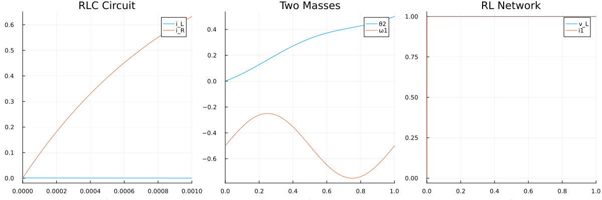
p4 = plot(cart_ref, title="Cart Pendulum", legend=:topright)
p5 = plot(gen_ref, title="Electric Generator", legend=:topright)
p6 = plot(spring_ref, title="Mass-Spring", legend=:topright)
plot(p4, p5, p6, layout=(1,3), size=(1200,400))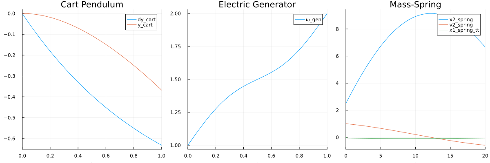
Work-Precision Benchmarks
Index-1 DAE: RLC Circuit
abstols = 1.0 ./ 10.0 .^ (5:8)
reltols = 1.0 ./ 10.0 .^ (1:4)
# RLC Circuit Work-Precision
setups_rlc = [
Dict(:prob_choice => 1, :alg=>Rosenbrock23()),
Dict(:prob_choice => 1, :alg=>Rodas5P()),
Dict(:prob_choice => 1, :alg=>CVODE_BDF()),
Dict(:prob_choice => 1, :alg=>FBDF()),
Dict(:prob_choice => 1, :alg=>QNDF()),
Dict(:prob_choice => 2, :alg=>Rodas4()),
Dict(:prob_choice => 2, :alg=>Rodas5P()),
]
wp_rlc = WorkPrecisionSet(all_probs[1], abstols, reltols, setups_rlc;
save_everystep=false, appxsol=all_refs[1], maxiters=Int(1e5), numruns=10)
plot(wp_rlc, title="RLC Circuit (Index-1) Work-Precision")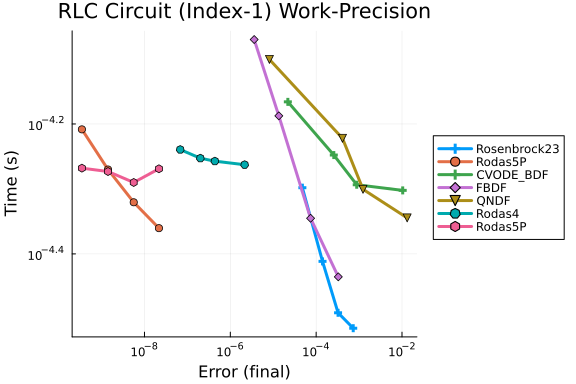
Index-2 DAE: Two Interconnected Masses
setups_masses = [
#Dict(:prob_choice => 2, :alg=>Rosenbrock23()),
Dict(:prob_choice => 1, :alg=>Rodas5P()),
#Dict(:prob_choice => 1, :alg=>CVODE_BDF()),
Dict(:prob_choice => 1, :alg=>FBDF()),
Dict(:prob_choice => 1, :alg=>QNDF()),
Dict(:prob_choice => 2, :alg=>Rodas4()),
Dict(:prob_choice => 2, :alg=>Rodas5P()),
]
wp_masses = WorkPrecisionSet(all_probs[2], abstols, reltols, setups_masses;
save_everystep=false, appxsol=all_refs[2], maxiters=Int(1e5), numruns=10)
plot(wp_masses, title="Two Masses (Index-2) Work-Precision")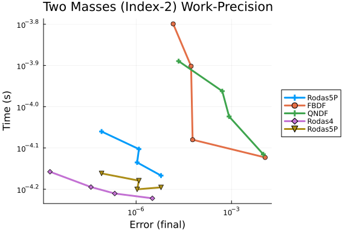
Index-2 DAE: RL Network
#=
setups_rl = [
Dict(:prob_choice => 1, :alg=>Rosenbrock23()),
Dict(:prob_choice => 1, :alg=>Rodas5P()),
#Dict(:prob_choice => 1, :alg=>CVODE_BDF()),
Dict(:prob_choice => 1, :alg=>FBDF()),
Dict(:prob_choice => 1, :alg=>QNDF()),
Dict(:prob_choice => 2, :alg=>Rodas4()),
Dict(:prob_choice => 2, :alg=>Rodas5P()),
]
wp_rl = WorkPrecisionSet(all_probs[3], abstols, reltols, setups_rl;
save_everystep=false, appxsol=all_refs[3], maxiters=Int(1e5), numruns=10)
plot(wp_rl, title="RL Network (Index-2) Work-Precision")
=#Index-3 DAE: Cart Pendulum
setups_cart = [
Dict(:prob_choice => 1, :alg=>Rosenbrock23()),
Dict(:prob_choice => 1, :alg=>Rodas5P()),
#Dict(:prob_choice => 1, :alg=>CVODE_BDF()),
Dict(:prob_choice => 1, :alg=>FBDF()),
Dict(:prob_choice => 1, :alg=>QNDF()),
Dict(:prob_choice => 2, :alg=>Rodas4()),
Dict(:prob_choice => 2, :alg=>Rodas5P()),
]
wp_cart = WorkPrecisionSet(all_probs[4], abstols, reltols, setups_cart;
save_everystep=false, appxsol=all_refs[4], maxiters=Int(1e5), numruns=10)
plot(wp_cart, title="Cart Pendulum (Index-3) Work-Precision")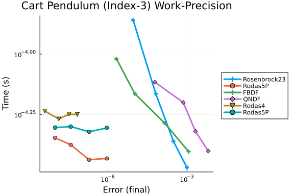
Index-3 DAE: Electric Generator
setups_gen = [
Dict(:prob_choice => 1, :alg=>Rosenbrock23()),
Dict(:prob_choice => 1, :alg=>Rodas5P()),
Dict(:prob_choice => 1, :alg=>CVODE_BDF()),
Dict(:prob_choice => 1, :alg=>FBDF()),
Dict(:prob_choice => 1, :alg=>QNDF()),
Dict(:prob_choice => 2, :alg=>Rodas4()),
Dict(:prob_choice => 2, :alg=>Rodas5P()),
]
wp_gen = WorkPrecisionSet(all_probs[5], abstols, reltols, setups_gen;
save_everystep=false, appxsol=all_refs[5], maxiters=Int(1e5), numruns=10)
plot(wp_gen, title="Electric Generator (Index-3) Work-Precision")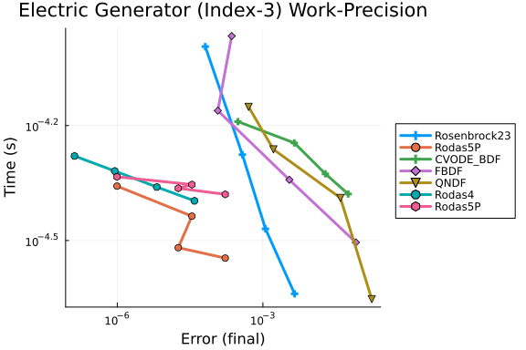
Index-3 DAE: Damped Mass-Spring System
setups_spring = [
Dict(:prob_choice => 1, :alg=>Rosenbrock23()),
Dict(:prob_choice => 1, :alg=>Rodas5P()),
#Dict(:prob_choice => 1, :alg=>CVODE_BDF()),
Dict(:prob_choice => 1, :alg=>FBDF()),
Dict(:prob_choice => 1, :alg=>QNDF()),
Dict(:prob_choice => 2, :alg=>Rodas4()),
Dict(:prob_choice => 2, :alg=>Rodas5P()),
]
wp_spring = WorkPrecisionSet(all_probs[6], abstols, reltols, setups_spring;
save_everystep=false, appxsol=all_refs[6], maxiters=Int(1e5), numruns=10)
plot(wp_spring, title="Mass-Spring (Index-3) Work-Precision")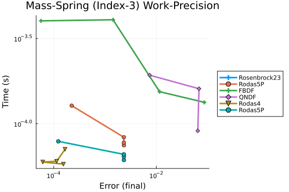
Low Tolerances Analysis
abstols_low = 1.0 ./ 10.0 .^ (7:12)
reltols_low = 1.0 ./ 10.0 .^ (4:9)
all_setups = [
Dict(:prob_choice => 1, :alg=>Rosenbrock23()),
Dict(:prob_choice => 1, :alg=>Rodas4()),
Dict(:prob_choice => 1, :alg=>Rodas5P()),
#Dict(:prob_choice => 1, :alg=>CVODE_BDF()),
Dict(:prob_choice => 1, :alg=>FBDF()),
Dict(:prob_choice => 1, :alg=>QNDF()),
Dict(:prob_choice => 2, :alg=>Rodas5P()),
]
# Generate work-precision plots for all systems at low tolerances
for (i, (probs, refs, name)) in enumerate(zip(all_probs, all_refs, system_names))
wp = WorkPrecisionSet(probs, abstols_low, reltols_low, all_setups;
save_everystep=false, appxsol=refs, maxiters=Int(1e5), numruns=10)
p = plot(wp, title="$name - Low Tolerances")
display(p)
end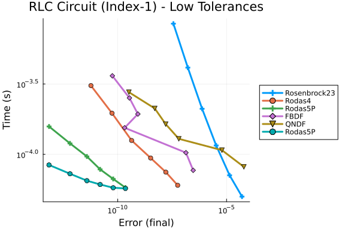 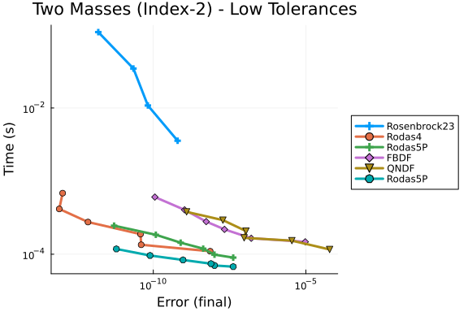 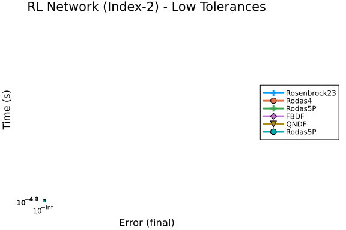 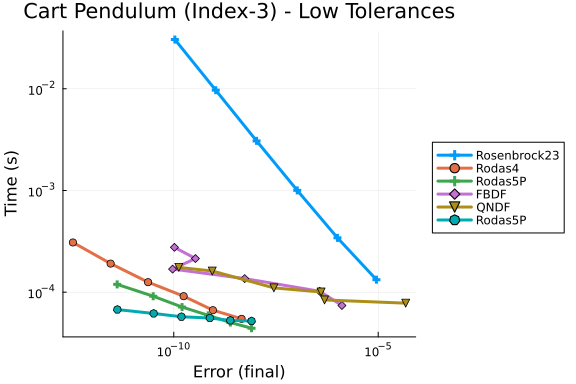 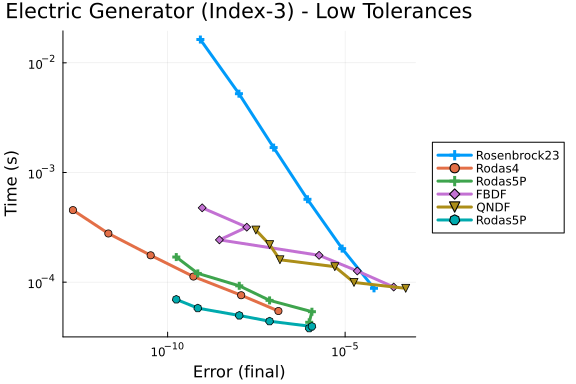 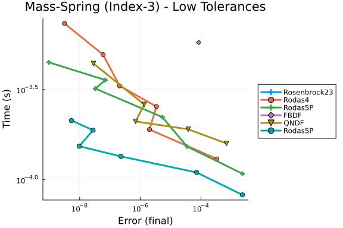
High Tolerances Analysis
This measures performance when just needing a reasonable answer quickly.
abstols_high = 1.0 ./ 10.0 .^ (3:6)
reltols_high = 1.0 ./ 10.0 .^ (1:4)
# High tolerance setups - focus on speed
high_setups = [
Dict(:prob_choice => 1, :alg=>Rosenbrock23()),
Dict(:prob_choice => 1, :alg=>Rodas5P()),
#Dict(:prob_choice => 1, :alg=>CVODE_BDF()),
Dict(:prob_choice => 1, :alg=>FBDF()),
Dict(:prob_choice => 1, :alg=>QNDF()),
Dict(:prob_choice => 2, :alg=>Rodas5P()),
]
for (i, (probs, refs, name)) in enumerate(zip(all_probs, all_refs, system_names))
wp = WorkPrecisionSet(probs, abstols_high, reltols_high, high_setups;
save_everystep=false, appxsol=refs, maxiters=Int(1e5), numruns=10)
p = plot(wp, title="$name - High Tolerances")
display(p)
end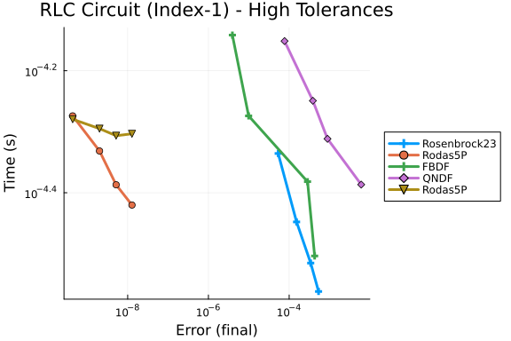 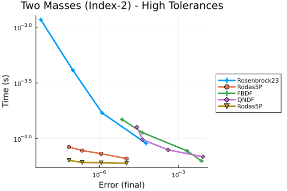 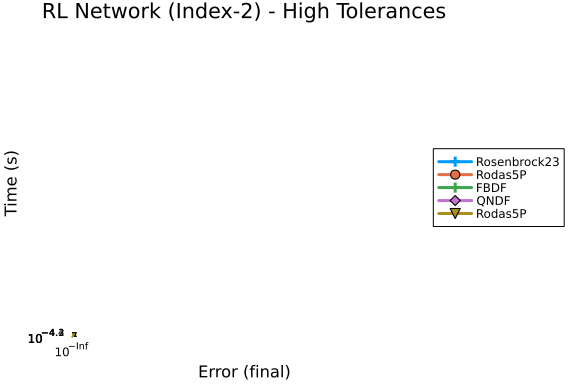 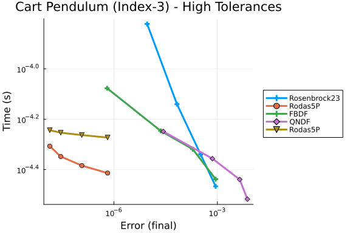 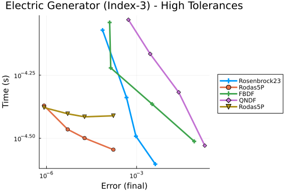 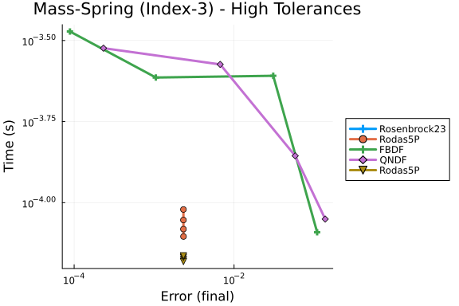
Summary Comparison
# Create summary comparison of all DAE types
plot_array = []
for (i, (probs, refs, name)) in enumerate(zip(all_probs, all_refs, system_names))
wp = WorkPrecisionSet(probs, abstols, reltols, all_setups;
save_everystep=false, appxsol=refs, maxiters=Int(1e5), numruns=10)
p = plot(wp, title=name, legend=false, titlefont=font(10))
push!(plot_array, p)
end
plot(plot_array..., layout=(2,3), size=(1500,800))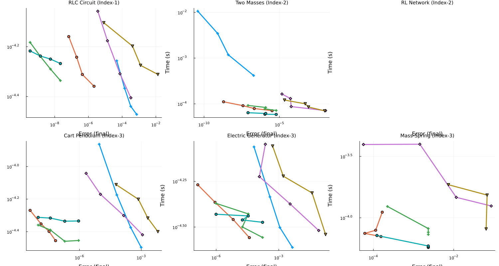
Timeseries Error Analysis
# Analyze L2 timeseries errors
abstols_ts = 1.0 ./ 10.0 .^ (5:8)
reltols_ts = 1.0 ./ 10.0 .^ (2:5)
for (i, (probs, refs, name)) in enumerate(zip(all_probs, all_refs, system_names))
wp = WorkPrecisionSet(probs, abstols_ts, reltols_ts, all_setups;
error_estimate=:l2, save_everystep=false, appxsol=refs,
maxiters=Int(1e5), numruns=10)
p = plot(wp, title="$name - L2 Timeseries Error")
display(p)
end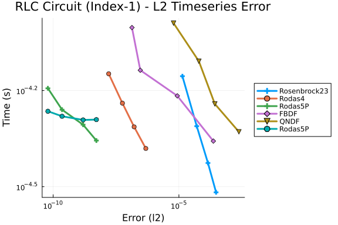 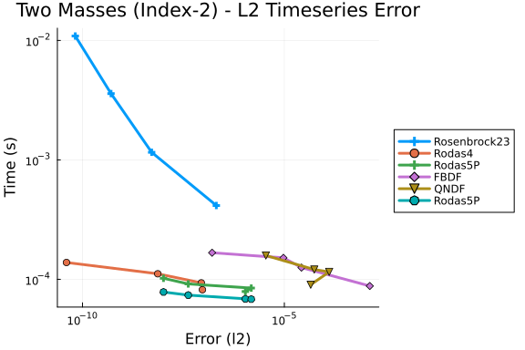 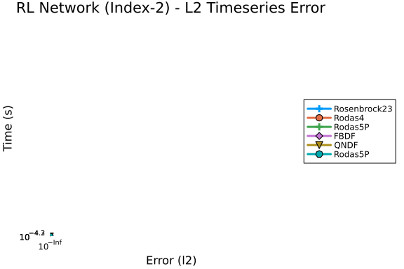 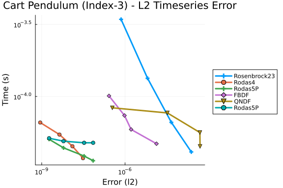 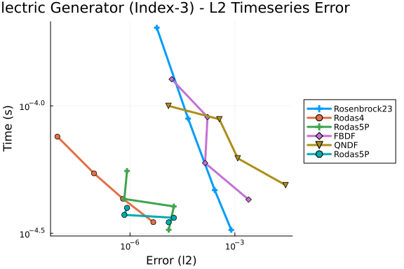 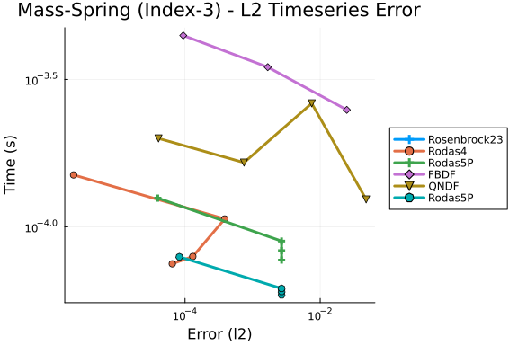
Appendix
These benchmarks are a part of the SciMLBenchmarks.jl repository, found at: https://github.com/SciML/SciMLBenchmarks.jl. For more information on high-performance scientific machine learning, check out the SciML Open Source Software Organization https://sciml.ai.
To locally run this benchmark, do the following commands:
using SciMLBenchmarks
SciMLBenchmarks.weave_file("benchmarks/DAE","LinearDAE.jmd")Computer Information:
Julia Version 1.10.10
Commit 95f30e51f41 (2025-06-27 09:51 UTC)
Build Info:
Official https://julialang.org/ release
Platform Info:
OS: Linux (x86_64-linux-gnu)
CPU: 128 × AMD EPYC 7502 32-Core Processor
WORD_SIZE: 64
LIBM: libopenlibm
LLVM: libLLVM-15.0.7 (ORCJIT, znver2)
Threads: 1 default, 0 interactive, 1 GC (on 128 virtual cores)
Environment:
JULIA_CPU_THREADS = 128
JULIA_DEPOT_PATH = /cache/julia-buildkite-plugin/depots/5b300254-1738-4989-ae0a-f4d2d937f953
Package Information:
Status `/cache/build/exclusive-amdci3-0/julialang/scimlbenchmarks-dot-jl/benchmarks/DAE/Project.toml`
[165a45c3] DASKR v2.9.1
[e993076c] DASSL v2.6.1
[f3b72e0c] DiffEqDevTools v2.48.0
⌅ [961ee093] ModelingToolkit v9.82.0
[09606e27] ODEInterfaceDiffEq v3.13.4
⌃ [1dea7af3] OrdinaryDiffEq v6.98.0
⌃ [91a5bcdd] Plots v1.40.16
[31c91b34] SciMLBenchmarks v0.1.3
⌃ [90137ffa] StaticArrays v1.9.13
[c3572dad] Sundials v4.28.0
[10745b16] Statistics v1.10.0
Info Packages marked with ⌃ and ⌅ have new versions available. Those with ⌃ may be upgradable, but those with ⌅ are restricted by compatibility constraints from upgrading. To see why use `status --outdated`And the full manifest:
Status `/cache/build/exclusive-amdci3-0/julialang/scimlbenchmarks-dot-jl/benchmarks/DAE/Manifest.toml`
⌃ [47edcb42] ADTypes v1.15.0
[1520ce14] AbstractTrees v0.4.5
[7d9f7c33] Accessors v0.1.42
[79e6a3ab] Adapt v4.3.0
[66dad0bd] AliasTables v1.1.3
[ec485272] ArnoldiMethod v0.4.0
[4fba245c] ArrayInterface v7.19.0
⌃ [4c555306] ArrayLayouts v1.11.1
[e2ed5e7c] Bijections v0.2.2
[d1d4a3ce] BitFlags v0.1.9
[62783981] BitTwiddlingConvenienceFunctions v0.1.6
⌃ [8e7c35d0] BlockArrays v1.6.3
[70df07ce] BracketingNonlinearSolve v1.3.0
[fa961155] CEnum v0.5.0
⌃ [2a0fbf3d] CPUSummary v0.2.6
⌃ [d360d2e6] ChainRulesCore v1.25.2
[fb6a15b2] CloseOpenIntervals v0.1.13
[944b1d66] CodecZlib v0.7.8
[35d6a980] ColorSchemes v3.30.0
[3da002f7] ColorTypes v0.12.1
[c3611d14] ColorVectorSpace v0.11.0
[5ae59095] Colors v0.13.1
[861a8166] Combinatorics v1.0.3
[a80b9123] CommonMark v0.9.1
[38540f10] CommonSolve v0.2.4
[bbf7d656] CommonSubexpressions v0.3.1
[f70d9fcc] CommonWorldInvalidations v1.0.0
⌃ [34da2185] Compat v4.17.0
[b152e2b5] CompositeTypes v0.1.4
[a33af91c] CompositionsBase v0.1.2
[2569d6c7] ConcreteStructs v0.2.3
[f0e56b4a] ConcurrentUtilities v2.5.0
[8f4d0f93] Conda v1.10.2
[187b0558] ConstructionBase v1.6.0
[d38c429a] Contour v0.6.3
[adafc99b] CpuId v0.3.1
[a8cc5b0e] Crayons v4.1.1
[165a45c3] DASKR v2.9.1
[e993076c] DASSL v2.6.1
[9a962f9c] DataAPI v1.16.0
⌅ [864edb3b] DataStructures v0.18.22
[e2d170a0] DataValueInterfaces v1.0.0
[8bb1440f] DelimitedFiles v1.9.1
⌃ [2b5f629d] DiffEqBase v6.177.1
⌃ [459566f4] DiffEqCallbacks v4.8.0
[f3b72e0c] DiffEqDevTools v2.48.0
[77a26b50] DiffEqNoiseProcess v5.24.1
[163ba53b] DiffResults v1.1.0
[b552c78f] DiffRules v1.15.1
⌅ [a0c0ee7d] DifferentiationInterface v0.6.54
[8d63f2c5] DispatchDoctor v0.4.26
[b4f34e82] Distances v0.10.12
[31c24e10] Distributions v0.25.120
[ffbed154] DocStringExtensions v0.9.5
⌃ [5b8099bc] DomainSets v0.7.15
[7c1d4256] DynamicPolynomials v0.6.2
[06fc5a27] DynamicQuantities v1.8.0
[4e289a0a] EnumX v1.0.5
[f151be2c] EnzymeCore v0.8.12
[460bff9d] ExceptionUnwrapping v0.1.11
[d4d017d3] ExponentialUtilities v1.27.0
[e2ba6199] ExprTools v0.1.10
[55351af7] ExproniconLite v0.10.14
⌃ [c87230d0] FFMPEG v0.4.2
[7034ab61] FastBroadcast v0.3.5
[9aa1b823] FastClosures v0.3.2
[442a2c76] FastGaussQuadrature v1.0.2
[a4df4552] FastPower v1.1.3
[1a297f60] FillArrays v1.13.0
[64ca27bc] FindFirstFunctions v1.4.1
⌃ [6a86dc24] FiniteDiff v2.27.0
[53c48c17] FixedPointNumbers v0.8.5
[1fa38f19] Format v1.3.7
⌅ [f6369f11] ForwardDiff v0.10.38
[069b7b12] FunctionWrappers v1.1.3
[77dc65aa] FunctionWrappersWrappers v0.1.3
[d9f16b24] Functors v0.5.2
[46192b85] GPUArraysCore v0.2.0
[28b8d3ca] GR v0.73.17
[c145ed77] GenericSchur v0.5.5
⌃ [d7ba0133] Git v1.4.0
[c27321d9] Glob v1.3.1
⌃ [86223c79] Graphs v1.13.0
[42e2da0e] Grisu v1.0.2
[cd3eb016] HTTP v1.10.17
[eafb193a] Highlights v0.5.3
[34004b35] HypergeometricFunctions v0.3.28
⌃ [7073ff75] IJulia v1.29.0
[615f187c] IfElse v0.1.1
[d25df0c9] Inflate v0.1.5
[18e54dd8] IntegerMathUtils v0.1.3
[8197267c] IntervalSets v0.7.11
[3587e190] InverseFunctions v0.1.17
[92d709cd] IrrationalConstants v0.2.4
[82899510] IteratorInterfaceExtensions v1.0.0
[1019f520] JLFzf v0.1.11
⌃ [692b3bcd] JLLWrappers v1.7.0
[682c06a0] JSON v0.21.4
[ae98c720] Jieko v0.2.1
⌃ [98e50ef6] JuliaFormatter v2.1.2
⌅ [70703baa] JuliaSyntax v0.4.10
⌃ [ccbc3e58] JumpProcesses v9.16.1
[ba0b0d4f] Krylov v0.10.1
[b964fa9f] LaTeXStrings v1.4.0
⌃ [23fbe1c1] Latexify v0.16.8
[10f19ff3] LayoutPointers v0.1.17
⌃ [5078a376] LazyArrays v2.6.1
[87fe0de2] LineSearch v0.1.4
[d3d80556] LineSearches v7.4.0
⌃ [7ed4a6bd] LinearSolve v3.18.2
[2ab3a3ac] LogExpFunctions v0.3.29
[e6f89c97] LoggingExtras v1.1.0
[d8e11817] MLStyle v0.4.17
[1914dd2f] MacroTools v0.5.16
[d125e4d3] ManualMemory v0.1.8
[bb5d69b7] MaybeInplace v0.1.4
[739be429] MbedTLS v1.1.9
[442fdcdd] Measures v0.3.2
[e1d29d7a] Missings v1.2.0
⌅ [961ee093] ModelingToolkit v9.82.0
[2e0e35c7] Moshi v0.3.7
[46d2c3a1] MuladdMacro v0.2.4
⌃ [102ac46a] MultivariatePolynomials v0.5.9
[ffc61752] Mustache v1.0.21
[d8a4904e] MutableArithmetics v1.6.4
[d41bc354] NLSolversBase v7.10.0
[2774e3e8] NLsolve v4.5.1
[77ba4419] NaNMath v1.1.3
⌃ [8913a72c] NonlinearSolve v4.9.0
⌃ [be0214bd] NonlinearSolveBase v1.12.0
⌃ [5959db7a] NonlinearSolveFirstOrder v1.5.0
⌃ [9a2c21bd] NonlinearSolveQuasiNewton v1.6.0
⌃ [26075421] NonlinearSolveSpectralMethods v1.2.0
[54ca160b] ODEInterface v0.5.0
[09606e27] ODEInterfaceDiffEq v3.13.4
[6fe1bfb0] OffsetArrays v1.17.0
[4d8831e6] OpenSSL v1.5.0
[429524aa] Optim v1.13.2
[bac558e1] OrderedCollections v1.8.1
⌃ [1dea7af3] OrdinaryDiffEq v6.98.0
⌃ [89bda076] OrdinaryDiffEqAdamsBashforthMoulton v1.2.0
⌃ [6ad6398a] OrdinaryDiffEqBDF v1.6.0
⌃ [bbf590c4] OrdinaryDiffEqCore v1.26.2
⌃ [50262376] OrdinaryDiffEqDefault v1.5.0
⌃ [4302a76b] OrdinaryDiffEqDifferentiation v1.10.0
⌃ [9286f039] OrdinaryDiffEqExplicitRK v1.1.0
⌃ [e0540318] OrdinaryDiffEqExponentialRK v1.4.0
⌃ [becaefa8] OrdinaryDiffEqExtrapolation v1.5.0
⌃ [5960d6e9] OrdinaryDiffEqFIRK v1.12.0
⌃ [101fe9f7] OrdinaryDiffEqFeagin v1.1.0
⌃ [d3585ca7] OrdinaryDiffEqFunctionMap v1.1.1
⌃ [d28bc4f8] OrdinaryDiffEqHighOrderRK v1.1.0
⌃ [9f002381] OrdinaryDiffEqIMEXMultistep v1.3.0
⌃ [521117fe] OrdinaryDiffEqLinear v1.3.0
⌃ [1344f307] OrdinaryDiffEqLowOrderRK v1.2.0
⌃ [b0944070] OrdinaryDiffEqLowStorageRK v1.3.0
⌃ [127b3ac7] OrdinaryDiffEqNonlinearSolve v1.10.0
⌃ [c9986a66] OrdinaryDiffEqNordsieck v1.1.0
⌃ [5dd0a6cf] OrdinaryDiffEqPDIRK v1.3.1
⌃ [5b33eab2] OrdinaryDiffEqPRK v1.1.0
⌃ [04162be5] OrdinaryDiffEqQPRK v1.1.0
⌃ [af6ede74] OrdinaryDiffEqRKN v1.1.0
⌃ [43230ef6] OrdinaryDiffEqRosenbrock v1.11.0
⌃ [2d112036] OrdinaryDiffEqSDIRK v1.3.0
⌃ [669c94d9] OrdinaryDiffEqSSPRK v1.3.0
⌃ [e3e12d00] OrdinaryDiffEqStabilizedIRK v1.3.0
⌃ [358294b1] OrdinaryDiffEqStabilizedRK v1.1.0
⌃ [fa646aed] OrdinaryDiffEqSymplecticRK v1.3.0
⌃ [b1df2697] OrdinaryDiffEqTsit5 v1.1.0
⌃ [79d7bb75] OrdinaryDiffEqVerner v1.2.0
[90014a1f] PDMats v0.11.35
[d96e819e] Parameters v0.12.3
[69de0a69] Parsers v2.8.3
[ccf2f8ad] PlotThemes v3.3.0
[995b91a9] PlotUtils v1.4.3
⌃ [91a5bcdd] Plots v1.40.16
⌃ [e409e4f3] PoissonRandom v0.4.4
[f517fe37] Polyester v0.7.18
[1d0040c9] PolyesterWeave v0.2.2
[85a6dd25] PositiveFactorizations v0.2.4
⌃ [d236fae5] PreallocationTools v0.4.27
⌅ [aea7be01] PrecompileTools v1.2.1
⌃ [21216c6a] Preferences v1.4.3
[08abe8d2] PrettyTables v2.4.0
[27ebfcd6] Primes v0.5.7
[43287f4e] PtrArrays v1.3.0
[1fd47b50] QuadGK v2.11.2
[74087812] Random123 v1.7.1
[e6cf234a] RandomNumbers v1.6.0
[3cdcf5f2] RecipesBase v1.3.4
[01d81517] RecipesPipeline v0.6.12
⌃ [731186ca] RecursiveArrayTools v3.34.1
[189a3867] Reexport v1.2.2
[05181044] RelocatableFolders v1.0.1
[ae029012] Requires v1.3.1
[ae5879a3] ResettableStacks v1.1.1
[79098fc4] Rmath v0.8.0
[47965b36] RootedTrees v2.23.1
[7e49a35a] RuntimeGeneratedFunctions v0.5.15
⌃ [9dfe8606] SCCNonlinearSolve v1.3.1
[94e857df] SIMDTypes v0.1.0
⌃ [0bca4576] SciMLBase v2.102.1
[31c91b34] SciMLBenchmarks v0.1.3
⌃ [19f34311] SciMLJacobianOperators v0.1.6
⌃ [c0aeaf25] SciMLOperators v1.3.1
[53ae85a6] SciMLStructures v1.7.0
[6c6a2e73] Scratch v1.3.0
[efcf1570] Setfield v1.1.2
[992d4aef] Showoff v1.0.3
[777ac1f9] SimpleBufferStream v1.2.0
⌃ [727e6d20] SimpleNonlinearSolve v2.5.0
⌃ [699a6c99] SimpleTraits v0.9.4
[ce78b400] SimpleUnPack v1.1.0
[b85f4697] SoftGlobalScope v1.1.0
⌃ [a2af1166] SortingAlgorithms v1.2.1
[0a514795] SparseMatrixColorings v0.4.21
[276daf66] SpecialFunctions v2.5.1
[860ef19b] StableRNGs v1.0.3
[aedffcd0] Static v1.2.0
[0d7ed370] StaticArrayInterface v1.8.0
⌃ [90137ffa] StaticArrays v1.9.13
[1e83bf80] StaticArraysCore v1.4.3
[82ae8749] StatsAPI v1.7.1
⌃ [2913bbd2] StatsBase v0.34.5
[4c63d2b9] StatsFuns v1.5.0
⌃ [7792a7ef] StrideArraysCore v0.5.7
[69024149] StringEncodings v0.3.7
[892a3eda] StringManipulation v0.4.1
[09ab397b] StructArrays v0.7.1
[c3572dad] Sundials v4.28.0
⌃ [2efcf032] SymbolicIndexingInterface v0.3.41
[19f23fe9] SymbolicLimits v0.2.2
⌃ [d1185830] SymbolicUtils v3.29.0
⌃ [0c5d862f] Symbolics v6.43.0
[3783bdb8] TableTraits v1.0.1
[bd369af6] Tables v1.12.1
[ed4db957] TaskLocalValues v0.1.3
[62fd8b95] TensorCore v0.1.1
[8ea1fca8] TermInterface v2.0.0
[1c621080] TestItems v1.0.0
[8290d209] ThreadingUtilities v0.5.5
[a759f4b9] TimerOutputs v0.5.29
[3bb67fe8] TranscodingStreams v0.11.3
⌃ [410a4b4d] Tricks v0.1.10
[781d530d] TruncatedStacktraces v1.4.0
[5c2747f8] URIs v1.6.1
[3a884ed6] UnPack v1.0.2
[1cfade01] UnicodeFun v0.4.1
⌃ [1986cc42] Unitful v1.23.1
[45397f5d] UnitfulLatexify v1.7.0
[a7c27f48] Unityper v0.1.6
[41fe7b60] Unzip v0.2.0
[81def892] VersionParsing v1.3.0
[897b6980] WeakValueDicts v0.1.0
[44d3d7a6] Weave v0.10.12
[ddb6d928] YAML v0.4.14
[c2297ded] ZMQ v1.4.1
[6e34b625] Bzip2_jll v1.0.9+0
[83423d85] Cairo_jll v1.18.5+0
[655fdf9c] DASKR_jll v1.0.0+0
[ee1fde0b] Dbus_jll v1.16.2+0
[2702e6a9] EpollShim_jll v0.0.20230411+1
⌃ [2e619515] Expat_jll v2.6.5+0
⌅ [b22a6f82] FFMPEG_jll v4.4.4+1
⌃ [a3f928ae] Fontconfig_jll v2.16.0+0
[d7e528f0] FreeType2_jll v2.13.4+0
[559328eb] FriBidi_jll v1.0.17+0
[0656b61e] GLFW_jll v3.4.0+2
[d2c73de3] GR_jll v0.73.17+0
[b0724c58] GettextRuntime_jll v0.22.4+0
⌃ [f8c6e375] Git_jll v2.50.0+0
[7746bdde] Glib_jll v2.84.3+0
[3b182d85] Graphite2_jll v1.3.15+0
[2e76f6c2] HarfBuzz_jll v8.5.1+0
⌃ [1d5cc7b8] IntelOpenMP_jll v2025.0.4+0
⌃ [aacddb02] JpegTurbo_jll v3.1.1+0
[c1c5ebd0] LAME_jll v3.100.3+0
[88015f11] LERC_jll v4.0.1+0
[1d63c593] LLVMOpenMP_jll v18.1.8+0
[dd4b983a] LZO_jll v2.10.3+0
[e9f186c6] Libffi_jll v3.4.7+0
[7e76a0d4] Libglvnd_jll v1.7.1+1
[94ce4f54] Libiconv_jll v1.18.0+0
⌃ [4b2f31a3] Libmount_jll v2.41.0+0
[89763e89] Libtiff_jll v4.7.1+0
⌃ [38a345b3] Libuuid_jll v2.41.0+0
⌃ [856f044c] MKL_jll v2025.0.1+1
⌃ [c771fb93] ODEInterface_jll v0.0.1+0
[e7412a2a] Ogg_jll v1.3.6+0
[9bd350c2] OpenSSH_jll v10.0.1+0
⌃ [458c3c95] OpenSSL_jll v3.5.1+0
[efe28fd5] OpenSpecFun_jll v0.5.6+0
[91d4177d] Opus_jll v1.5.2+0
[36c8627f] Pango_jll v1.56.3+0
⌅ [30392449] Pixman_jll v0.44.2+0
[c0090381] Qt6Base_jll v6.8.2+1
[629bc702] Qt6Declarative_jll v6.8.2+1
[ce943373] Qt6ShaderTools_jll v6.8.2+1
[e99dba38] Qt6Wayland_jll v6.8.2+1
[f50d1b31] Rmath_jll v0.5.1+0
⌅ [fb77eaff] Sundials_jll v5.2.2+0
[a44049a8] Vulkan_Loader_jll v1.3.243+0
⌃ [a2964d1f] Wayland_jll v1.23.1+2
⌅ [02c8fc9c] XML2_jll v2.13.6+1
[ffd25f8a] XZ_jll v5.8.1+0
[f67eecfb] Xorg_libICE_jll v1.1.2+0
[c834827a] Xorg_libSM_jll v1.2.6+0
[4f6342f7] Xorg_libX11_jll v1.8.12+0
[0c0b7dd1] Xorg_libXau_jll v1.0.13+0
[935fb764] Xorg_libXcursor_jll v1.2.4+0
[a3789734] Xorg_libXdmcp_jll v1.1.6+0
[1082639a] Xorg_libXext_jll v1.3.7+0
[d091e8ba] Xorg_libXfixes_jll v6.0.1+0
[a51aa0fd] Xorg_libXi_jll v1.8.3+0
[d1454406] Xorg_libXinerama_jll v1.1.6+0
[ec84b674] Xorg_libXrandr_jll v1.5.5+0
[ea2f1a96] Xorg_libXrender_jll v0.9.12+0
[c7cfdc94] Xorg_libxcb_jll v1.17.1+0
[cc61e674] Xorg_libxkbfile_jll v1.1.3+0
[e920d4aa] Xorg_xcb_util_cursor_jll v0.1.5+0
[12413925] Xorg_xcb_util_image_jll v0.4.1+0
[2def613f] Xorg_xcb_util_jll v0.4.1+0
[975044d2] Xorg_xcb_util_keysyms_jll v0.4.1+0
[0d47668e] Xorg_xcb_util_renderutil_jll v0.3.10+0
[c22f9ab0] Xorg_xcb_util_wm_jll v0.4.2+0
[35661453] Xorg_xkbcomp_jll v1.4.7+0
[33bec58e] Xorg_xkeyboard_config_jll v2.44.0+0
[c5fb5394] Xorg_xtrans_jll v1.6.0+0
[8f1865be] ZeroMQ_jll v4.3.6+0
[3161d3a3] Zstd_jll v1.5.7+1
[35ca27e7] eudev_jll v3.2.14+0
[214eeab7] fzf_jll v0.61.1+0
⌃ [a4ae2306] libaom_jll v3.11.0+0
⌅ [0ac62f75] libass_jll v0.15.2+0
[1183f4f0] libdecor_jll v0.2.2+0
[2db6ffa8] libevdev_jll v1.13.4+0
[f638f0a6] libfdk_aac_jll v2.0.4+0
[36db933b] libinput_jll v1.28.1+0
[b53b4c65] libpng_jll v1.6.50+0
[a9144af2] libsodium_jll v1.0.21+0
[f27f6e37] libvorbis_jll v1.3.8+0
[009596ad] mtdev_jll v1.1.7+0
[1317d2d5] oneTBB_jll v2022.0.0+0
⌅ [1270edf5] x264_jll v2021.5.5+0
⌅ [dfaa095f] x265_jll v3.5.0+0
[d8fb68d0] xkbcommon_jll v1.9.2+0
[0dad84c5] ArgTools v1.1.1
[56f22d72] Artifacts
[2a0f44e3] Base64
[ade2ca70] Dates
[8ba89e20] Distributed
[f43a241f] Downloads v1.6.0
[7b1f6079] FileWatching
[9fa8497b] Future
[b77e0a4c] InteractiveUtils
[4af54fe1] LazyArtifacts
[b27032c2] LibCURL v0.6.4
[76f85450] LibGit2
[8f399da3] Libdl
[37e2e46d] LinearAlgebra
[56ddb016] Logging
[d6f4376e] Markdown
[a63ad114] Mmap
[ca575930] NetworkOptions v1.2.0
[44cfe95a] Pkg v1.10.0
[de0858da] Printf
[3fa0cd96] REPL
[9a3f8284] Random
[ea8e919c] SHA v0.7.0
[9e88b42a] Serialization
[1a1011a3] SharedArrays
[6462fe0b] Sockets
[2f01184e] SparseArrays v1.10.0
[10745b16] Statistics v1.10.0
[4607b0f0] SuiteSparse
[fa267f1f] TOML v1.0.3
[a4e569a6] Tar v1.10.0
[8dfed614] Test
[cf7118a7] UUIDs
[4ec0a83e] Unicode
[e66e0078] CompilerSupportLibraries_jll v1.1.1+0
[deac9b47] LibCURL_jll v8.4.0+0
[e37daf67] LibGit2_jll v1.6.4+0
[29816b5a] LibSSH2_jll v1.11.0+1
[c8ffd9c3] MbedTLS_jll v2.28.2+1
[14a3606d] MozillaCACerts_jll v2023.1.10
[4536629a] OpenBLAS_jll v0.3.23+4
[05823500] OpenLibm_jll v0.8.5+0
[efcefdf7] PCRE2_jll v10.42.0+1
[bea87d4a] SuiteSparse_jll v7.2.1+1
[83775a58] Zlib_jll v1.2.13+1
[8e850b90] libblastrampoline_jll v5.11.0+0
[8e850ede] nghttp2_jll v1.52.0+1
[3f19e933] p7zip_jll v17.4.0+2
Info Packages marked with ⌃ and ⌅ have new versions available. Those with ⌃ may be upgradable, but those with ⌅ are restricted by compatibility constraints from upgrading. To see why use `status --outdated -m`